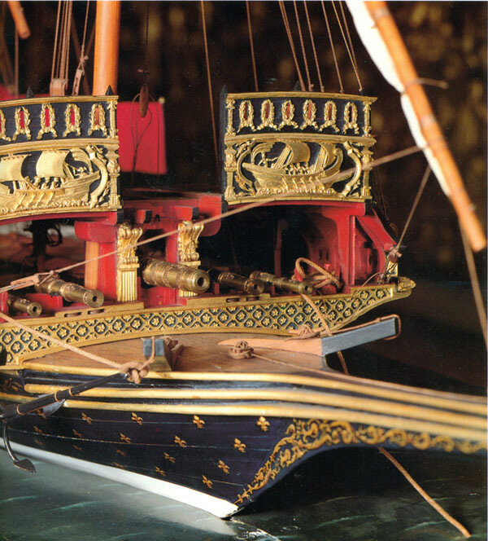

Коротко рассмотрев достоинства галер XVII века, перейдем теперь к их недостаткам, точнее, оганичениям в их оперативном использовании.
Галеры и тяжелая артиллерия «суть вещи несовместные». Большая часть ограничений на использование галер XVII века в боевых действиях была следствием либо невозможности использования тяжелой артиллерии на борту самих галер, либо ее наличия на борту кораблей противника. Тактико-технические данные боевых кораблей всегда представляют собой компромисс между мореходностью, скоростью, радиусом действия (автономностью) и вооружением. Значительное увеличение одной из этих характеристик ограничивает остальные. Не удивительно поэтому, что с началом применения тяжелой артиллерии на военных кораблях произошли радикальные изменения в соотношении этих качеств.

Артиллерия галеры на модели из французского Морского музея
Галеры были не только крайне уязвимы от огня орудий вражеских кораблей, но и сами из-за конструктивных особенностей были не способны нести большое количество артиллерии. Пушки на галере (вместе с необходимым оборудованием и запасами, которые требовались для такого оружия) требовали значительного места, которое можно было изыскать только за счет пространства, отводимого для продовольствия и воды; а эти запасы нельзя было существенно сокращать из-за большого количества людей на борту. Кроме того, вес орудий и ударные нагрузки от их отдачи требовали более прочных штук набора. Проектировщики вынуждены были увеличить основные размерения судна для того, чтобы корабль мог принять дополнительный вес орудий: корпус стал длиннее для размещения большего количества весел, а палуба расширилась для увеличения количества гребцов на каждом весле. После этих взаимосвязанных изменений галеры смогли сохранить почти ту же маневренность и скорость, которой они обладали прежде, но эта очень ограниченная тяжелая артиллерия была получена за счет принесения в жертву в соответствующей пропорции мореходности и радиуса действия (автономности).
Добавление артиллерии имело серьезное влияние на мореходные качества, потому что единственным местом, где могло быть установлено орудие больших размеров, являлось пространство в носу судна. К общему весу надо было добавить вес тяжелого дубового ограждения, предназначенного для того, чтобы затруднить продвижение идущего на абордаж противника и обеспечить прикрытие для матросов галеры и гребцов. На некоторых французских галерах весовая нагрузка дополнительно увеличивалась за счет того, что ограждение было покрыто кованым железом толщиной в четверть дюйма и весом около одной тонны (P.Bamford). С такой броней или без нее, но подобная нагрузка в носу была серьезным фактором, который мог угрожать безопасности галеры в штормовую погоду.
В 1690 г. офицеры французских галер обсуждали проблему плохой всхожести носа на волну в связи с усилиями руководства Корпусом по замене использовавшихся до этого дорогих бронзовых пушек железными. Офицеры галер решительно настаивали на сохранении бронзовых орудий, естественно думая о престиже и безопасности. Но самым серьезным аргументом, открыто высказанным противниками использования железных орудий, был их больший вес. По оценкам офицеров даже несколько сотен фунтов, о которых может идти речь при замене маленьких пушек – четырех- и восьмифунтовой – которые были установлены на большинстве галер, будут иметь «большие последствия для галер, на которых очень важно в максимальной степени уменьшить весовую нагрузку на нос». Галера, «естественно перегруженная в носу», могла встретить серьезные неприятности даже при умеренном волнении моря. Офицеры ссылались на опыт ордена св. Иоанна, подчеркивая, что иоанниты испытали уже все средства для размещения железных орудий на своих галерах, но в конце концов продолжили использование бронзовых. Но все их доводы оказались напрасными. Интендант галер был в 1690 г. информирован о том, что Его величество не может выделить значительную сумму на закупку необходимых для галер 57 новых бронзовых пушек, поэтому следует использовать железные орудия.
Когда надвигался шторм, командиры галер имели веские основания для того, чтобы укрыться в ближайшем порту. Обычно какое-нибудь прибрежное убежище было недалеко, но даже в этих случаях опасность часто подстерегала галеры. Восемь из десяти французских галер, возвращавшихся из Мессины в 1678 г., должны были сбросить за борт ограждение и даже орудия, чтобы облегчить нос. Капитаны доложили, что не было другого выхода для спасения галер. Штормящее море крайне затруднило греблю, делая ее иногда вообще невозможной. Все весла галеры должны двигаться согласованно. Если сильное волнение и килевая качка серьезно мешали согласованности движения, то весла, их лопасти или вальки, могли быть сломаны, и судьба самого судна могла быть поставлена под угрозу. Неблагоприятная погода испытывала квалификацию опытных гребцов и требовала от них величайшего напряжения. Даже крепкие гребцы быстро изматывались в борьбе со штормом. Галеры могли платить жизнями своих моряков, если они противостояли противному ветру или сильному волнению даже всего несколько часов. Но подробнее о том, какую роль играл «адмирал Непогода» в навигации галер поговорим в следующий раз.